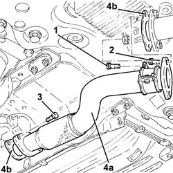
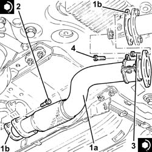
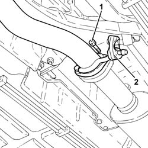
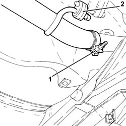
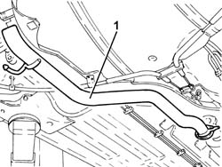

1076B18 RIGID SECTION OF EXHAUST PIPE BETWEEN CATALYTIC CONVERTER AND SILENCER - R + R
- Path
- Procedures > 10 ENGINE UNIT > 1076 EXHAUST PIPES AND SILENCERS > 1076B EXHAUST PIPES AND SILENCERS > 1076B18 RIGID SECTION OF EXHAUST PIPE BETWEEN CATALYTIC CONVERTER AND SILENCER - R + R
- Kind
- repair procedure (removal / refitting; the operation number is the code)
- Applies to
- engines: 2.0 JTS, 1.9 JTD 16V; all production periods
- Interactive page
- https://sloeber94.github.io/elrnDB-aGt/en/#/125001100
Applies to: engines: 2.0 JTS; all production periods
 Removing
Removing
 Refitting
RefittingPosition the vehicle on the ramp
Proceed with removal
Op. 7055B54 UNDER-ENGINE GUARD - R R
1. Undo the bolt securing the collar supporting the rigid exhaust pipe section between converter and silencer to the relevant bracket.
2. Undo the bolts securing the rigid exhaust pipe section between converter and silencer to the catalytic converter.
3. Undo the bolts securing the rigid exhaust pipe section between converter and silencer to the front silencer.
4. Remove the rigid exhaust pipe section between converter and silencer (4a) and the relevant gaskets (4b).

Applies to: engines: 2.0 JTS; all production periods
Refitting
Removing1. Refit in its seating the rigid exhaust pipe section between converter and silencer (1a) complete with gaskets (1b).
2. Tighten the bolts securing the rigid exhaust pipe section between converter and silencer to the front silencer to the recommended torque.
 | Fastening | Component | Ø | Value (daNm) |
|---|---|---|---|---|
2 | Bolt | RIGID EXHAUST PIPE | M8 |
3. Tighten the bolts securing the rigid exhaust pipe section between converter and silencer to the catalytic converter to the specified torque.
| Fastening | Component | Ø | Value (daNm) |
|---|---|---|---|---|
3 | Bolt | RIGID EXHAUST PIPE | M8 | (Catalytic converter side) 2.3 ÷ 2.8 |
4. Tighten the bolt securing the collar supporting the rigid exhaust pipe section between converter and silencer to the relevant bracket.

Applies to: engines: 2.0 JTS; all production periods
Proceed with refitting
Op. 7055B54 UNDER-ENGINE GUARD - R R.
Remove the car from the ramps.
Applies to: engines: 1.9 JTD 16V; all production periods
Removing
RefittingPosition the vehicle on the ramp
1. Undo the bolts securing the rigid exhaust pipe section between the catalytic converter and silencer, catalytic converter side.
2. Release the rigid pipe for the exhaust pipe between the catalytic converter and the silencer from the front flexible mounting.

Applies to: engines: 1.9 JTD 16V; all production periods
1. Loosen the collar fastening the rigid exhaust pipe section between the catalytic converter and silencer, rear silencer side.
2. Release the rigid pipe for the exhaust pipe between the catalytic converter and the silencer from the rear flexible mounting.

Applies to: engines: 1.9 JTD 16V; all production periods
1. Remove the rigid exhaust pipe section between catalytic converter and silencer, releasing it from the rear exhaust silencer.

Applies to: engines: 1.9 JTD 16V; all production periods
Refitting
RemovingRefit the rigid exhaust pipe section between the catalytic converter and the silencer and connect it to the rear exhaust silencer.
Connect the rigid exhaust pipe section between the catalytic converter and the silencer to the flexible mountings.
Tighten the collar fastening the rigid section of the exhaust pipe between the catalytic converter and the silencer, rear silencer side.
Tighten the bolts securing the rigid exhaust pipe section between catalytic converter and silencer, catalytic converter side to the specified torque.
| Fastening | Component | Ø | Value (daNm) |
|---|---|---|---|---|
- | Bolt | CATALYTIC CONVERTER (ONE) | M8 | (Rigid pipe side) 2.3 ÷ 2.8 |
Remove the car from the ramps.
Topics linked from this page (1)
Topics that link to this page (25)
- 0510C20 LUBRICATION SYSTEM - CHECK DELIVERY PRESSURE
- 1004B10 POWER UNIT WITH MANUAL GEARBOX - R + R
- 1004B24 POWER UNIT WITH MANUAL GEARBOX WITH HYDRAULIC SELECTION - R R
- 1008B20 POWER UNIT INTERMEDIATE MOUNT FLEXIBLE BLOCK - REPLACE
- 1040A10 FUEL TANK - R + R AND DECANT FUEL
- 1040A14 FUEL TANK - R + R FOR REPLACEMENT
- 1072B10 INLET MANIFOLD - R + R AND REPLACE SEAL
- 1072D10 MODULAR INLET MANIFOLD - R+R
- 1076A32 EXHAUST RIGID MOUNT - R R
- 1076A40 EXHAUST PIPE HEAT SHIELD - R R
- 1080E28 ENABLEMENT SOLENOID FOR FLOW OF FUEL VAPOUR TO INLET - R+R
- 1080E63 FUEL VAPOR HOSE BETWEEN RIGID PIPE AND CUT OFF SOLENOID R R
- 1084A42 ENGINE OIL TEMPERATURE SENDER UNIT - R + R
- 2125C70 GEARBOX/BRAKE LEVER MOUNT - R R
- 3340B56 RIGID PIPE FROM HYDRAULIC CONTROL UNIT TO RIGHT FRONT BRAKE - R.R.
- 3340B67 RH BRAKE CONNECTION PIPE - R R
- 3340B69 RHP BRAKE CONNECTION PIPE - R R
- 4130A10 POWER STEERING BOX - R+R - CHECK TOW-IN IF NECESSARY SEPARATELY - INCLUDES BLEEDING
- 4130B49 RETURN PIPE FROM POWER STEERING CASE TO HEAT EXCHANGER PIPE R R
- 4410D13 FRONT SUSPENSION BEAM - R R
- 4410D15 FRONT SUSPENSION BEAM COMPLETE WITH WISHBONES AND STABILISER BAR R R
- 5510C34 RPM AND TIMING SENSOR (SINGLE) - R+R
- 5510C42 KNOCK SENSOR - R+R
- 5520B10 STARTER MOTOR - R+R
- 5530A10 ALTERNATOR - R+R